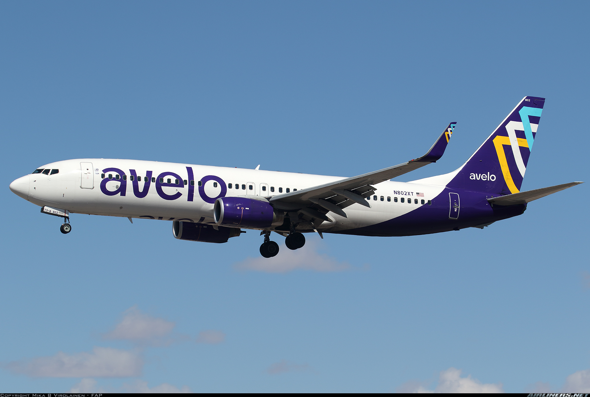
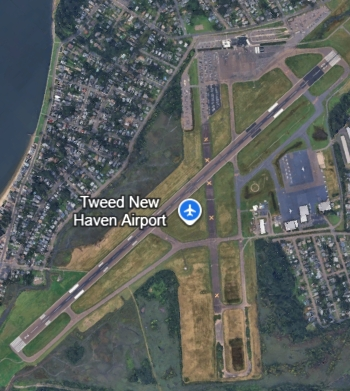
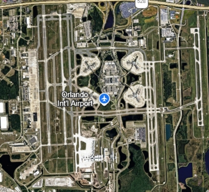

My honest take on Avelo Airlines
low-cost airline, Avelo focuses on flying to smaller more niche airports and they are mainly focused on surving leisure destination with their goal being convenienece instead of comfort, i took a fight from Tweed New Haven airport HVN to Orlando international airport MCO and back and here is my honest opinion

booking the fight
it was a traight forward process you go on their website you choose your origin and destination, deparure dates, and your party but thy usually nickel and dime you alot similar to other ULCC's and your booked but if your pockets arent deep enought to get a seat its a bit of gamble in my opinion
customer service
if yo want to change something about your flight such as your party or departure date or have lost something, you will have have through the treacherous customer service of avelo, that can take from 2 to 6 hours of long dreaded waiting some of the most difficult people to get ahold of but when they pick up now until the sun explodes the service is decent they usually do their job but in urgent times its not worth it
airport experience and boarding
the airport tweed new haven is one of avelos hubs even though is rather extremely small building comes with some advantages i arrived at the airport about 20 minutes before the doors close i didnt go though baggage draop off because of the time cramp but we made it throught the extremely small terminal/TSA line and we made it a few minutes before the doors closed the jet we flew on was a 737-800 on 14 year old N814VL which was one of the 15 or so jets on avelo takeoff was relatively quick with the short taxiways the 5600ft runway limits the 737-800s performance and making takeoffs more exciting and adrenaline inducing for aviation enthusaiests like me and the ascent was quick and smooth

cruising and mid flight
the mid flight was nice there wasnt much headwind resulting in smooth sailing they didnt serve any drinks on the flight which was a little bit of a boo in my book but thety easily made up for it because they encourage you to bringing some of your own food on the flight avelo features no inflight entertainment so your better off sleeping in the cabin or walking around inside of it or just downloading movies before hand the seatsw are quite spacious as a guy who is 5 foot 7 i could fully stretch out my legs without bothering the seat in front of me and while the seats do not offer padding they do offer a god 20 or so degrees of inclination
touchdown/landing
we started descending around north florida before touching down 20 anad arriving 20 minutes early the landing was smooth considering that we were at Orlando INTLand we taxied to airside 2 which is the dock at MCO southwest operates out of couse we debaorded the plane in a time effecient fashion even though airside 2 at orlando minly operates auoth west flights its quite ambient and we exited orlando international aiport 20 minutes early and all in one peice
